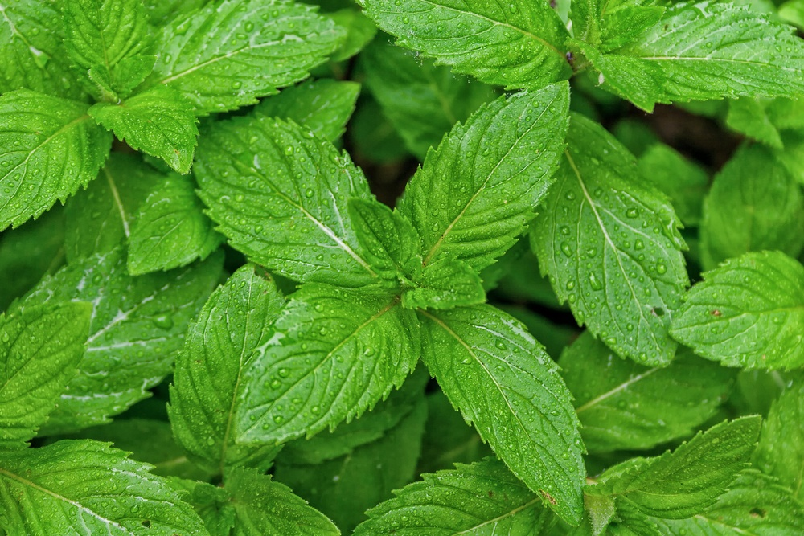
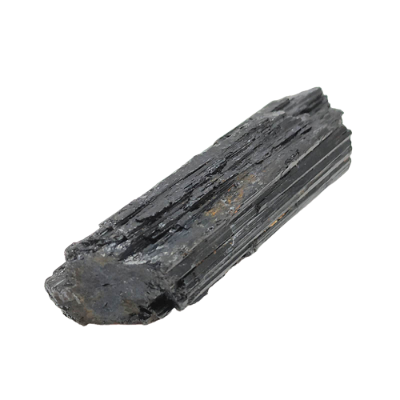
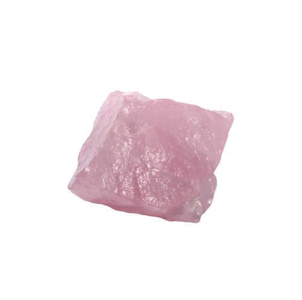

WICCA NATURAL
SEJA UMA WICCA
PLANTAS



ARRUDA
A arruda tem um papel muito importante, pois ela sozinha consegue
afastar o mau olhado, a
inveja, as energias negativas e ruins de um
ambiente ou de uma pessoa
Quando usada em chá pode aliviar:
Dores reumáticas;
Dores no estomago;
Varizes;
Dores provocadas por má circulação do sangue;
Dores de cabeça;
Cólicas menstruais
HORTELÃ
As propriedades mágicas da hortelã estão conectadas a à força, à
saúde, à prosperidade, ao amor, à renovação, à cura e à proteção.Uma combinação
de chá de folhas de hortelã, raiz de gengibre e uma
colher de sobremesa de mel de eucalipto está indicada
nos seguintes
casos: resfriados, gripes, dor de garganta e disfunções digestivas
como azia, dispepsia e
falta de apetite.
PEDRAS E SIGNFICADOS
TURMALINA PRETA
Essa é uma das mais poderosas pedra de proteção, sendo capaz de neutralizar e repelir todas as formas de
energia negativa, como ataques psíquicos, mau olhado, inveja, maldições ou rituais de magia negra. A
Turmalina Preta funciona com um verdadeiro pára raio contra a negatividade.
Ela é uma poderosa pedra ligada à terra, de natureza elétrica, proporcionando uma conexão entre a Terra e o
espírito humano. Suas propriedades elétrica são capazes de dissipar substâncias tóxicas e neutralizar as
radiações negativas de celulares, computadores e outros equipamentos eletrônicos.
Sua energia de suporte alinha os centros de energia do corpo e canaliza a luz de purificação por todo o
sistema. Promove uma sensação de poder e autoconfiança, permitindo uma visão mais clara e objetiva do mundo.
Capacita todos aqueles que precisam viver ou trabalhar em ambientes desafiadores ou quando enfrentam
circunstâncias difíceis.
QUATZO ROSA
Ele purifica intensamente, inspira a cura emocional, fortalece e o amor próprio, acalma a mente, elimina
preocupações e promove a verdadeira paz interior.
Suas poderosas vibrações de amor incondicional